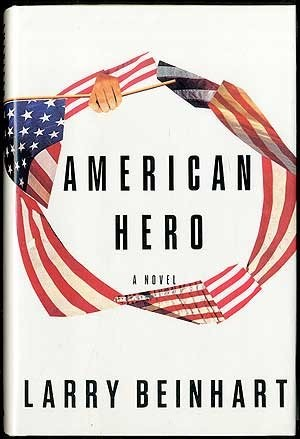

22:51 · 1 OPERA
Capodanno 2020: chi l’avrebbe mai detto?
Il filo del discorso
Nel contributo pubblicato il 31 dicembre 2020, Caldarella propone un riferimento cinematografico per riflettere sul rapporto fra politica, media e paura. Dopo un cenno alla convenzionalità del Capodanno e alle differenze fra calendari, presenta Wag the Dog, distribuito in Italia come Sesso & potere. La storia di una guerra costruita in studio per distrarre da uno scandalo presidenziale gli serve da modello satirico della manipolazione dell’opinione pubblica. Il relatore accosta il film agli eventi della presidenza Clinton, ma il parallelismo proposto non dimostra da solo le motivazioni di decisioni storiche reali. L’immagine della coda che muove il cane diventa poi l’occasione per distinguere la capacità di calcolo da una ragione orientata dall’etica: la scaltrezza non coincide, nella sua lettura, con l’intelligenza. Il riferimento al proprio libro L’ultima dea d’Occidente collega questa distinzione alla critica della modernità. La parte conclusiva interpreta la paura della morte e il potere come fattori di assoggettamento, applicando tale prospettiva alle restrizioni del 2020. Si tratta di un giudizio politico del relatore sulla pandemia e sulle istituzioni. Il congedo alterna una previsione pessimistica alla speranza che la crisi riapra una discussione su diritti, democrazia e libertà, fino all’invito finale a pensare e resistere.
I libri nel discorso

American Hero
Copertina: Pantheon · New York, 1993 · sovraccoperta del romanzo
Immagine autentica dell’opera, controllata visivamente; l’edizione di riferimento non è attribuita al filmato.
American Hero e Larry Beinhart sono nominati come romanzo da cui è tratto Wag the Dog; il cognome è normalizzato tramite cataloghi.
Passaggio 3:32 ↗ · Fonti e libro ↗Minutaggi ricavati da testi automatici, da riascoltare. Le identificazioni probabili sono segnalate accanto ai libri.